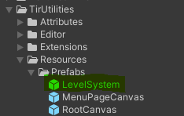
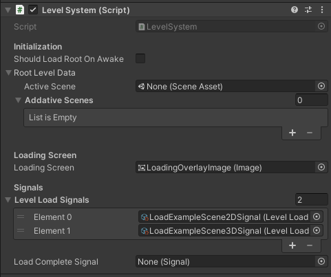
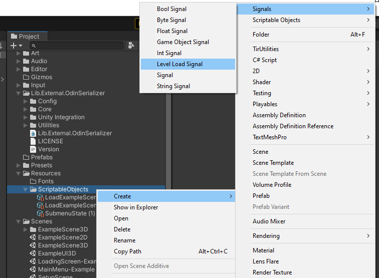
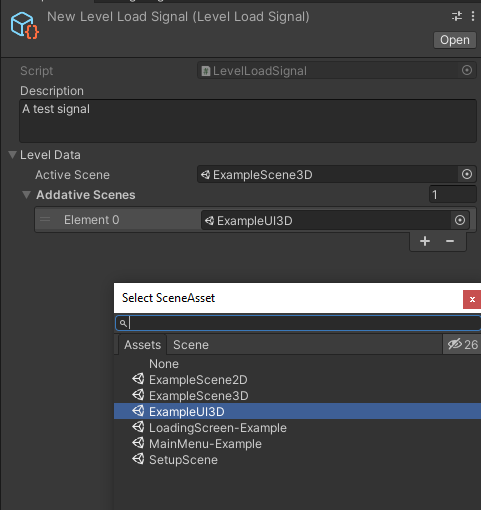
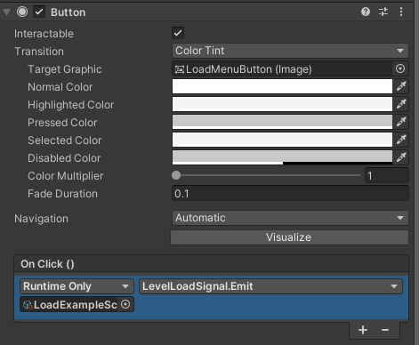

Level System
This functions as a centralized system for loading scenes. Loading scenes is usually a simple process, but leads to a lot of code duplication. For example:
// This behaviour would need to be attached to each object that
// needs to will needs to start a scene transition.
public class Loader : MonoBehaviour
{
[SerializeField]
private string _activeSceneName;
[SerializeField]
private List<string> _additiveScenes = new List<string>();
// This will load the scenes asynchronously.
public void LoadLevel()
{
SceneManager.LoadSceneAsync(_activeSceneName)
.completed += LevelLoader__completed;
OnLoadComplete?.Invoke();
}
private static void LevelLoader__completed(AsyncOperation operation)
{
foreach (string scene in _additiveScenes)
SceneManager.LoadSceneAsync(scene, LoadSceneMode.Additive);
}
}
Maintaining these string references on multiple objects is cumbersome and error prone. The level system avoids this by isolating all of the logic from the scene references. A prefab with the level system attached can be found under Resources/Prefabs.

This object will be moved to DontDestroyOnLoad on awake.
Usage
Component Setup

The level system component should be placed on a game object that can be moved to DontDestroyOnLoad. The optional root level data will be loaded if required, then each level load signal will be assigned the receiver StartCoroutine(LevelLoader.LoadLevelDataAsync(levelData)). As a result, level signals SHOULD NOT be emitted in awake or start to avoid race conditions.
When the level system finishes loading a level it will emit the signal assigned to Load Complete Signal.
Loading Levels
In this system level consist of an active scene and a set of optional additive scenes. These are stored as a level data struct on a level load signal. When adding new levels to your game, you must first create a new level load signal in the resources folder as pictured below.

Once the signal has bee created scenes can be assigned in the inspector.

To load a level, simply emit its signal.
